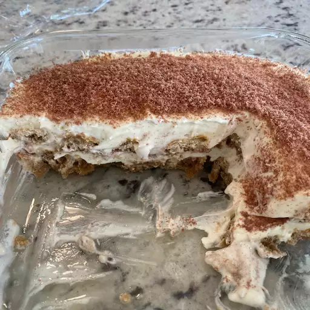

Tiramisu

This Sopranos-style tiramisu is a light, traditional-tasting amaretto
tiramisu recipe. Cognac can be substituted for amaretto liqueur. Dark
coffee can be substituted for espresso.
Ingredients
- 1 pound mascarpone cheese
- 1 cup white sugar
- 2 tablespoons amaretto liqueur, or more to taste
- 1 cup heavy whipping cream
- 1 cup cold espresso
- 24 ladyfingers, lightly toasted
- 2 (1 ounce) squares unsweetened chocolate, divided
Steps
-
Whisk mascarpone cheese, sugar, and amaretto liqueur together in a bowl
until smooth.
-
Beat cream in a glass or metal bowl until soft peaks form. Lift your
beater or whisk straight up: whipped cream will form soft mounds rather
than a sharp peak. Fold whipped cream into mascarpone mixture. Pour
espresso into a separate bowl.
-
Dip ladyfingers into espresso; arrange 12 dipped ladyfingers in an
8-inch square pan. Spread 1/2 mascarpone mixture over ladyfingers. Grate
1 chocolate square over mascarpone layer; arrange remaining 12 dipped
ladyfingers on top. Spread remaining 1/2 mascarpone mixture over
ladyfingers; grate remaining 1 chocolate square over mascarpone layer.
Refrigerate tiramisu until set, at least 2 hours.
Home